こんにちは、ライターの斎藤です。
はじまりました。はじまってしまいました。
ミスコン×金町食文化研究会！！
金町のおいしいお店と、ミスコン候補者のナチュラルな素顔をお届けしていくこの企画。
第一弾の特集の舞台は...
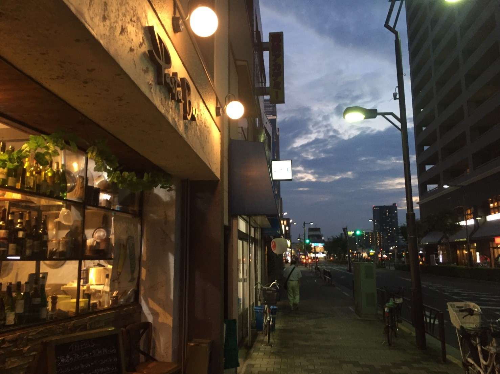「Pasta Bar TASAKI」
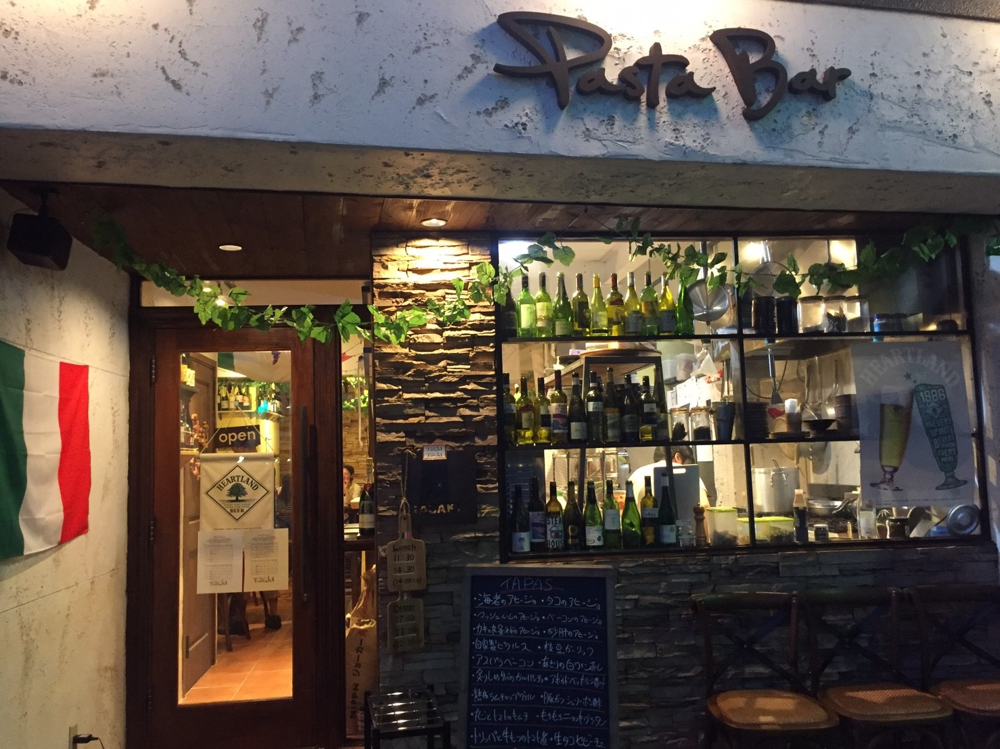見よ！
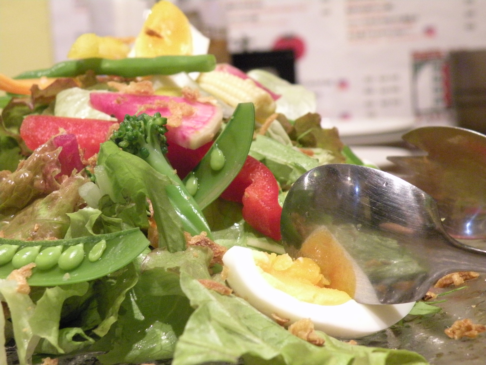この！！
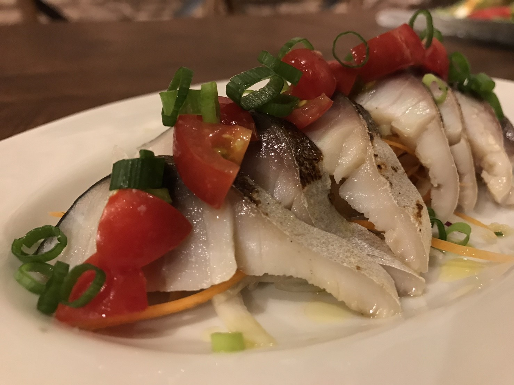パスタぁ〜！！
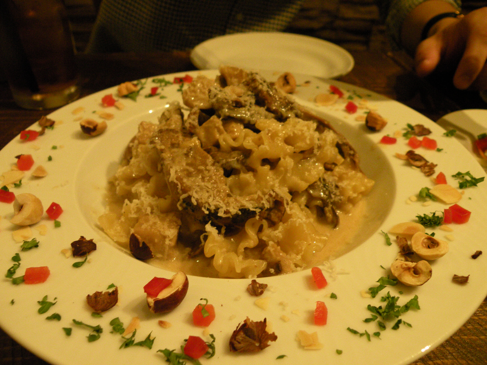...じゅるり。
金町南口にある、いつも満席のピッツェリア「Pizzeria da TASAKI」の2号店として今年の夏にオープンしたばかりの「自家製」「生パスタ」専門店！！うひょー！
「普段はソースからパスタを決めると思うけれど、
タサキでは麺からパスタを選んで、普段と違うパスタを楽しんでもらいたい」という言葉どおり
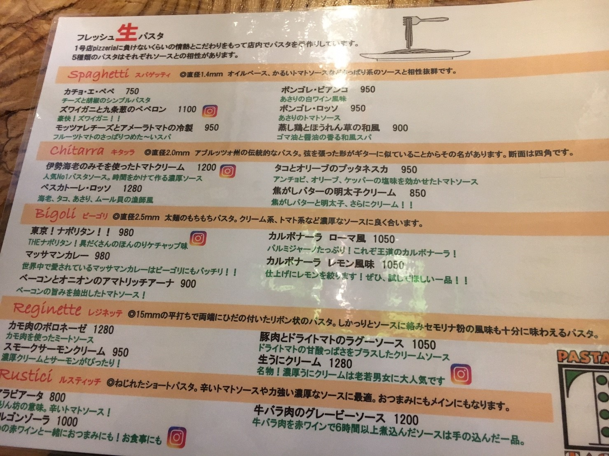...パスタ５種類ある
......スパゲッティしかわからない。
「オレ、この間金町のタサキでルスティッチ食べたんだよね〜あのショートパスタの。本当はビーゴリと悩んだんだけどさア〜」とか言ってみたい。
「ザギンでシースー」より絶対イケてる。
お店の中はとってもキュート。 オーナーのタサキさんもチャーミングで
シースー訂正させてください！デートできたい！よ！！
...わかってます。わかってますよ。私の願望を言うコーナーじゃないですからね。わかりました。 登場していただきましょう。 今回の主役。
理科大ミスターコンNo.6
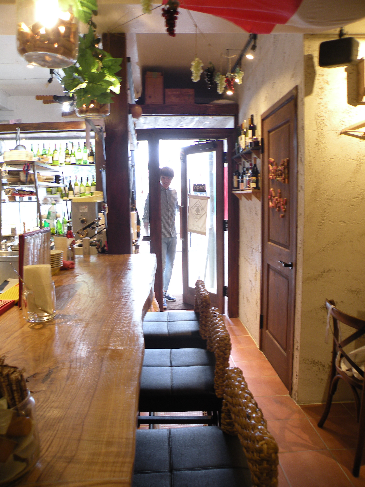 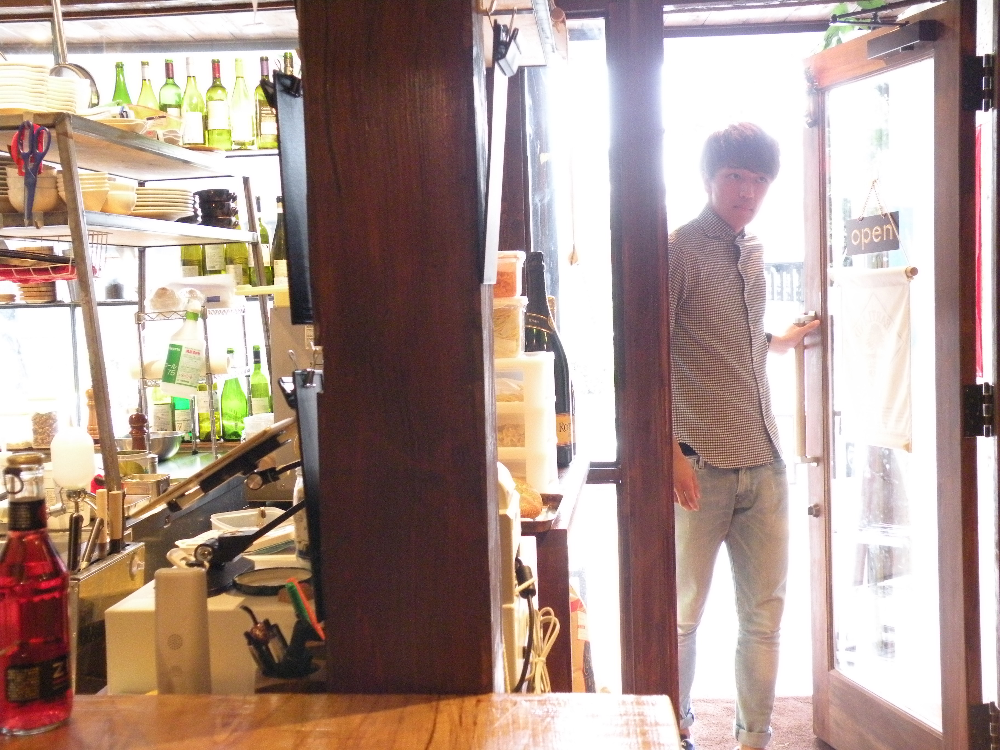 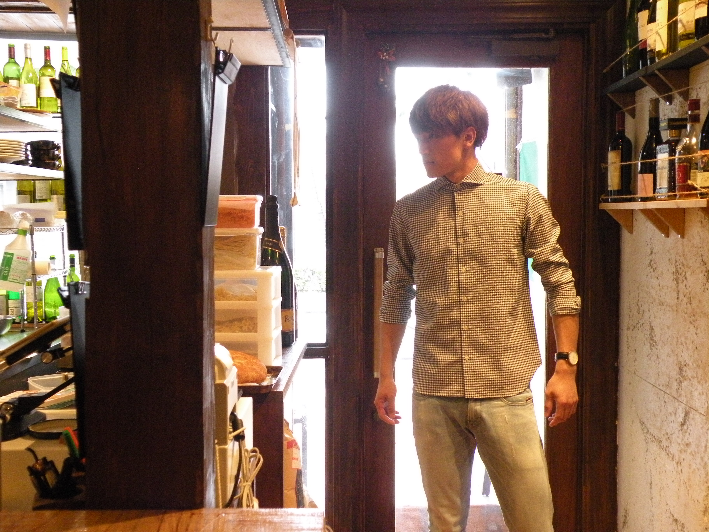藤井飛翔くん
たべる
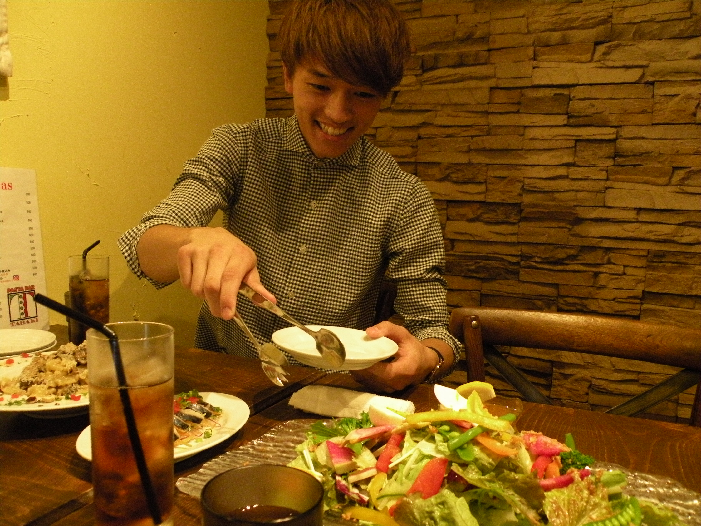たべる
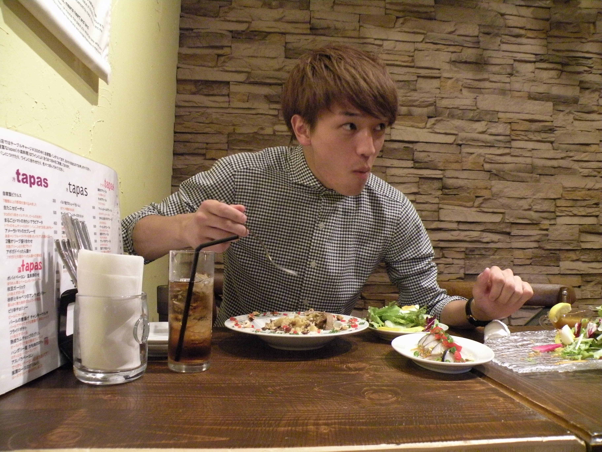ふふっ
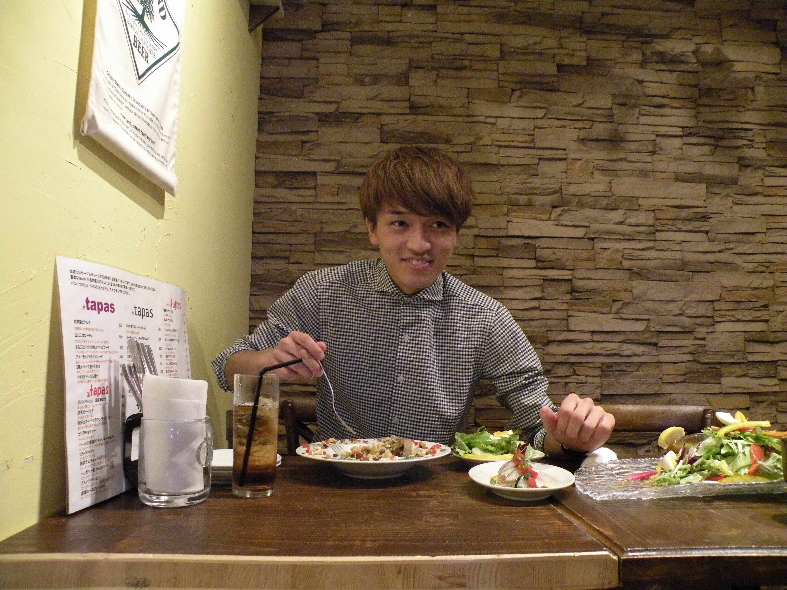お腹も満たしていただいたところで、始めさせていただきましょう。
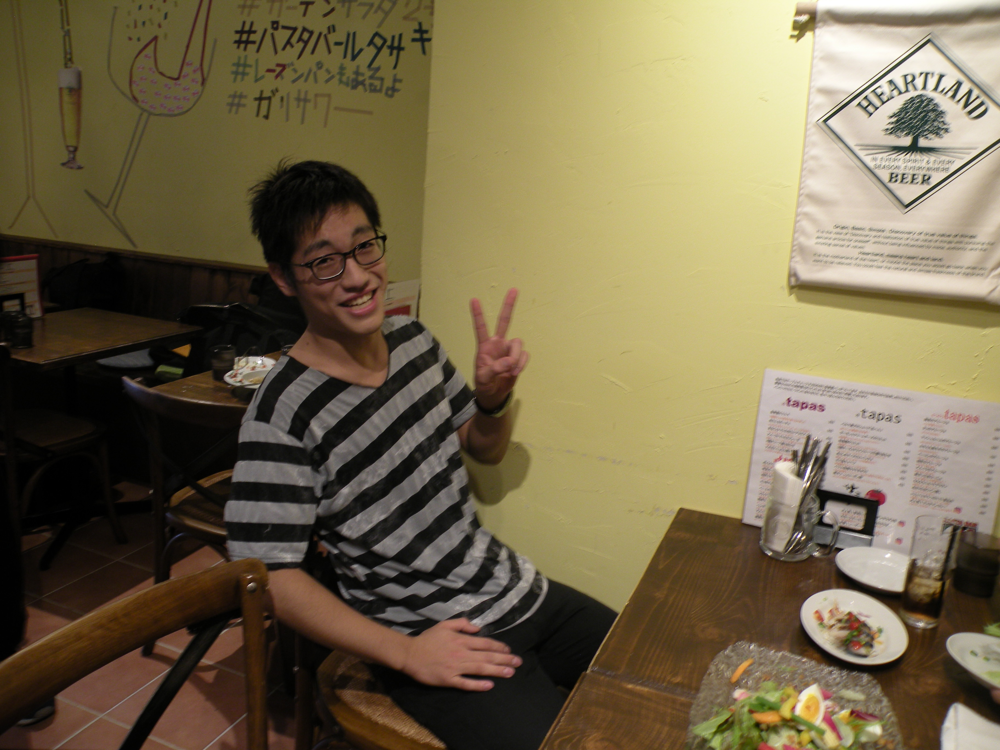インタビュアーはこの人。お名前を。
＜たかはし＞東京理科大工学部建築学科の高橋です。
＜たかはし＞改めまして、よろしくお願いします。
＜藤井さん＞よろしくお願いします。

ごはんのハナシ
＜たかはし＞ 我々食べ物系の団体なので、食べ物に関する質問をしたいと思うのですが、フードファイトが趣味だとか？
＜藤井さん＞ そうなんです、甘太郎さんの企画で10ポンドのステーキを食べるっていうのがあったんですけど
＜たかはし＞10ポンド。
※10ポンド＝4.5キロくらい
＜藤井さん＞ 45分で食べきるっていうのを友達と応募したんですよね、まあハズレちゃいましたけど。
＜たかはし＞ でも実際「10ポンド一人で食えるぜ」みたいな感じではないんですか？
＜藤井さん＞ 制限時間があるから厳しいですね（笑） 制限時間がなかったら一人で何ポンドとかやってみたいと思いますね。でも 2ポンド3ポンドくらいだったら余裕かな。
＜たかはし＞ 3ポンドって普通じゃないですか？
＜藤井さん＞ と、思うじゃないですか。でも 「3ポンド45分」って言われたらキツくないですか？
＜たかはし＞ ...3ポンド...1350gくらいですよね...確かにきついな。。
※ちなみに３ポンドステーキはこれくらい。秋葉原なのでアクセスもよいかも
＜たかはし＞ 普段はやっぱりよく食べるんですか？
＜藤井さん＞ 1回に食べる量が多いっていうよりは、1日で4食5食って食べる方が多いです。結構間食もしてしまうので、割とカラダにいいかって言ったらアレですけど（笑）
＜藤井さん＞ でも食べる日は、朝食を抜いて、昼にめちゃくちゃいっぱい食べるんですよね。
＜たかはし＞ 学校の時も？
＜藤井さん＞ うーん学校だったら...神楽坂にいた時はよく
大勝軒の大豚とか週2、3回は食べてましたね。豚麺だと450 gの麺なんですけどそれの大盛りで600g、いつものやつの野菜マシマシででかい肉塊が２つ。
＜たかはし＞ 食えるんですか。
＜藤井さん＞ 食べちゃいますね。
＜たかはし＞ そのあと授業寝ないんですか？
＜藤井さん＞ 寝ないっす。全然。

（指示入る）
＜たかはし＞ あっ指示入っちゃいました...我々ので何が聞きたいかってなったんですね、飛翔さんに...
あっつばささんって呼んでいいですか？
＜藤井さん＞ いや全然いいですよ、むしろつばさ以外何があんの（笑）
＜たかはし＞ つばさくん、つばさん、ばっさー、ってあったんですよ。
＜ばっさー＞ばっさーで。
＜たかはし＞ いや、すいません、つばささんでいきましょう。

ホッケーのハナシ
＜たかはし＞ アイスホッケーをやってらっしゃるということでそんなにガタイが良いんですか？
＜つばささん＞ 自分は中高の時は、体重を落とす方の競技をやってたんですよ。駅伝ですね。長距離。つける体力が今のホッケーと全然違うので、体を大きくするという線では結構悩んでますね。
＜たかはし＞ なるほど、（長距離と違って）アイスホッケーって選手1人の試合時間が1、2分だとか？
＜つばささん＞ そうなんですよ！よくご存知で。
＜たかはし＞ 勉強しました。
＜つばささん＞ さすがっす。（笑）

＜たかはし＞ ホッケー情報をぶち込みたいなと思いまして。
＜つばささん＞ そうなんですよ。1分2分くらいで回転させないと保たないんで（選手が）スタミナ的には中学高校頑張ってきた長距離の延長線上でいけますけど、体作りっていう面では結構異なりますね。

＜たかはし＞ やっぱりこの1年で体重は増えたんですか？
＜つばささん＞ この1年で体重は60 kgから72 kgまで増えました。
＜たかはし＞ 72 kg?! 全部筋肉ですか？
＜つばささん＞ いや、食べて脂肪も増やしてるので。12 kg太りました。
＜たかはし＞ たぶん僕つばささんと同じ身長と体重なんですよ。全然体が違う。ぶよぶよです。
＜つばささん＞ 何かスポーツやられてるんですか？
＜たかはし＞ あ、僕に質問しちゃいますか？

＜たかはし＞ 中学の時は柔道やってたんです。高校は柔道部なくてやめちゃったんですけど。当時体が小さくて50 kg級だったんです。（最高学年の）中3が1人だったので、団体戦で「先鋒、俺」っていう。
（指示入る）
＜たかはし＞ あ、僕の話になっちゃった。
浪人のハナシ
＜たかはし＞ かっこいいだけじゃない、つばささんの一面も聞きたいなと思って。浪人されてますよね？
＜つばささん＞ 浪人の時に仲良くなった友達は、中学高校の友達と同じくらい深いつながりができたとは思っていますね。あと浪人中の生活は、勉強だけやってるとなかなか続かない性格なので、週1回か2回は必ず体を動かすって決めていましたね。だから浪人は一切苦じゃなかったかな。
＜たかはし＞ 今でもその友達とは連絡はとっていますか？
＜つばささん＞ とってます。いつも一緒にいた５人のうち2人がミスターに出ているんですよね。
＜たかはし＞ ええーっ！
＜つばささん＞ 今でも彼らはお互いに影響を受けたり、与えたりできている関係なので、よかったなあって思いますね。

＜たかはし＞ じゃあ2人ともバシッとミスターになって、写真撮りましょうよ。
＜つばささん＞ カッコイイですね。そういうの憧れます。
金町のハナシ
＜つばささん＞ （ピザの）タサキは5、6回目ですね。くるの。
＜たかはし＞ 常連ですね〜。大食いだったら「珍来」行ったほうが良いですよ。特盛ってあるの知ってます？
※珍来: 金町といえばここ！という中華料理屋さん。しれっと大盛りを勧めてくるけど、とにかく量が多い！床が滑る。
＜つばささん＞知ってます。
＜たかはし＞ ああ〜〜っ！（崩れ落ちる）
＜つばささん＞ 部活のミーティングが夜に金町である時は、「珍来」か「MARUKO」かガストですね。
※MARUKO: 二郎インスパイア系のラーメン屋。昼夜問わず理科大生で賑わう。
＜つばささん＞ ガスト、この間行ったら3人で¥25,000いきました。
＜たかはし＞ ¥25,000?!
＜つばささん＞ 最初全員５品ずつ揃えてからスタートして、2時間くらいずっと食べ続けてましたね。お酒なしで。
＜たかはし＞ 僕この間友達とサイゼリアに行ったんですけど、酒入れて五人で¥15,000ですよ。やるなぁ。
＜つばささん＞ 僕なんかの比にならないくらい先輩たちも食べるんで。体の大きい人も小さい人も。

＜つばささん＞ 金町って駅側に来ないとお店があまりないじゃないですか。大学からの距離と、休み時間50分っていうのを考えると（昼休みは）難しいかなぁ。だから学食で食べるか、午後から授業の時は自宅近くで食べてきちゃいますね。あんまり金町でごはん食べないかな。

＜たかはし＞ 金町に「こんなお店があったらいいな」っていうのはありますか？僕はハンバーガーとかもっと欲しいんです。
＜つばささん＞ いいですねハンバーガー。確かにマクドナルドみたいなファストフード系のお店は欲しいんですけど、チェーン店じゃなくて、学生にもリーズナブルで、「大盛り無料にしてあげるよ」みたいに店主の方とコミュニケーションができるようなお店があるといいですよね。あと学食もいろいろメニューは出してくれてるけれど、普段学食で食べられないようなメニューがいいかなぁ。
＜たかはし＞ これはもう我々がビシッと発信していくんで。我こそはっていうお店の方が出てきてくれると思います！
ごはんはどうでしたか？
＜つばささん＞ 普段食べられないような、モチモチした麺が印象的でした。とても美味しかったです。 秋の限定メニュー「ポルチーニ茸のクリームソース レジネッテ」は、濃厚なクリームに負けないポルチーニの香りと、それをしっかり支えるレジネッテのおいしいハーモニー。
10月いっぱいまで。お早めに！

Ms.担当の方から初撮影での写真を頂きました🌈🌈
— 藤井 飛翔 (@mrtus2016_06) 2016年8月18日
お花畑に俺が入るとこんな感じらしいです🌷🌺
全く可愛くなりませね。笑
この時からNo.5千葉ちゃんに会えてないので来週楽しみです。👯👯https://t.co/WWHzrCti2d pic.twitter.com/ktMCF6GmTU
今回のお店「Pasta Bar TASAKI」
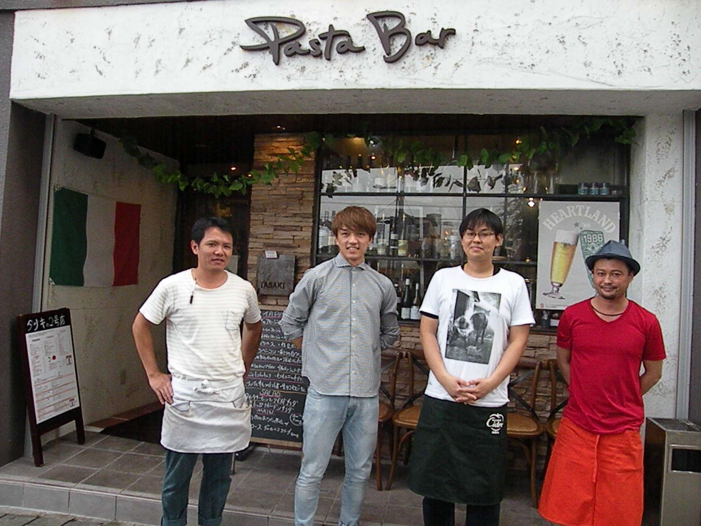営業時間 11:30-14:00 / 17:00-23:00 月曜定休
pizzanapoletana.tokyo東京都葛飾区金町6-9-7